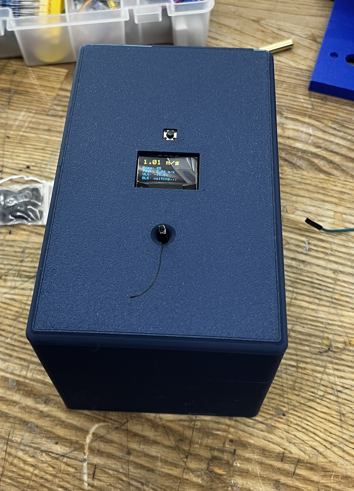
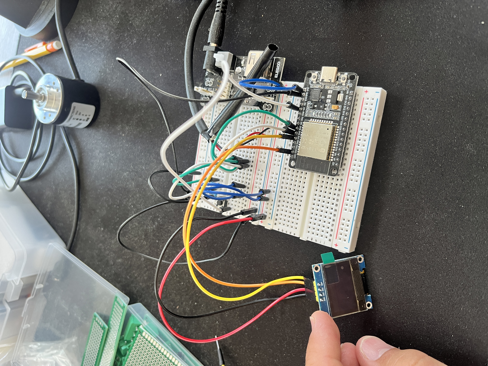

02 / PERSONAL PROJECT
Velocity-Based Trainer.
A low-cost electromechanical system designed to measure movement velocity using a custom tether mechanism, rotary encoder, ESP32 electronics, and an external display.

Build more for less.
The project started with a simple engineering objective: reproduce the core function of a commercial VBT at approximately one-quarter of the cost.
Objective. Build a VBT for personal use that matches the functionality of commercially available products at ¼ the price.
Rather than reproducing an existing product exactly, I focused on the underlying measurement problem: converting linear tether motion into a reliable velocity measurement and presenting that result to the user in real time.
- Cost-conscious design
- Compact mechanical packaging
- Reliable motion measurement
- Readily available components
- Prototype-focused development

Turning linear motion into rotation.
The mechanical system uses a tether and spool to convert linear displacement into rotary motion that can be measured by the encoder.
As the tether extends and retracts, it rotates a spool connected to a rotary encoder. Spool geometry provides the relationship between encoder rotation and tether displacement, allowing the electronics to calculate linear velocity.
The design also required consideration of spring retraction, tether routing, packaging, manufacturability, and integration between the mechanical and electrical components.
Tether motion → Spool rotation → Rotary encoder → ESP32 → Velocity calculation → External display

Integrating sensing and firmware.
The electronics connect the physical mechanism to the velocity measurement shown to the user.
Sensor. A rotary encoder was selected because the mechanical architecture already converts tether motion into rotation. Measuring encoder motion over time provides the displacement information needed for velocity.
Firmware. The ESP32 reads encoder motion, tracks elapsed time, converts rotational displacement into linear displacement, calculates velocity, and sends the result to an external display.
- ESP32 firmware development
- Rotary encoder integration
- Velocity calculation
- Electrical packaging
- External display interface

Prototype, test, iterate.
Testing is being used to evaluate measurement accuracy, repeatability, and overall system performance.
The first prototype successfully integrates the mechanical tether system, rotary encoder, ESP32 electronics, and external display into a functioning measurement system.
Quantitative validation will be added as testing is completed, including the measured velocity range, reference measurements, error, repeatability, and final prototype cost.
| Specification | Result |
|---|---|
| Target Cost | ≤ $50 |
| Final Cost | $47 |
| Velocity Range | > .01 m/s |
| Encoder Resolution | 600 P/R gives 0.2mm resoluion |
| Sampling Rate | 200 Hz |

What I built and learned.
The project brought mechanical design, electronics, firmware, manufacturing, and testing together into one working prototype.
The project strengthened my ability to move from a system-level objective to a physical prototype while balancing cost, packaging, sensing, and manufacturability.
Most importantly, it gave me hands-on experience integrating mechanical and electrical subsystems rather than treating them as separate design problems.
Next step. Continue testing and use the measured results to identify opportunities for improved accuracy, repeatability, packaging, and overall cost.
- Mechanical design
- CAD design
- ESP32 firmware
- Electromechanical integration
- Calibration and testing
- Prototyping

Detailed calculations, measurements, testing data, and design iterations can be linked here later.
← back to selected work